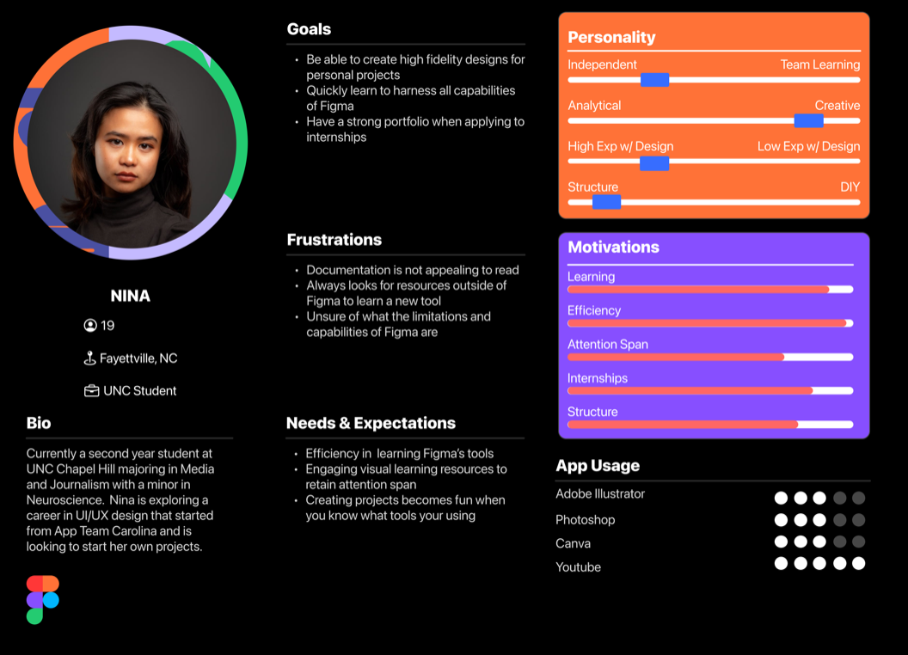
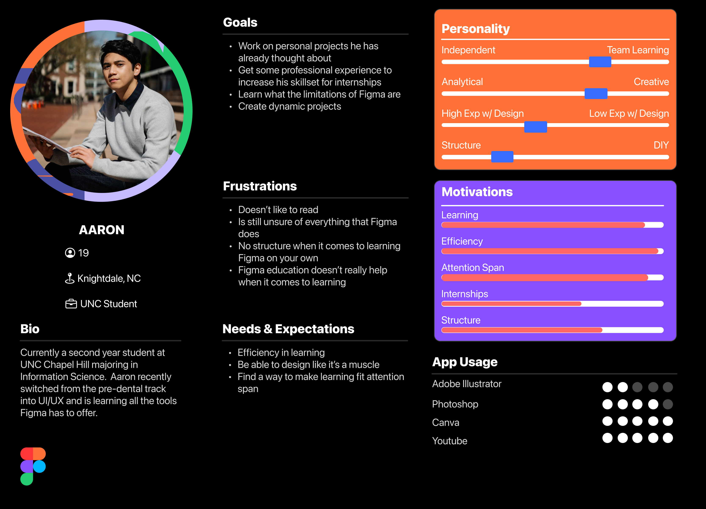
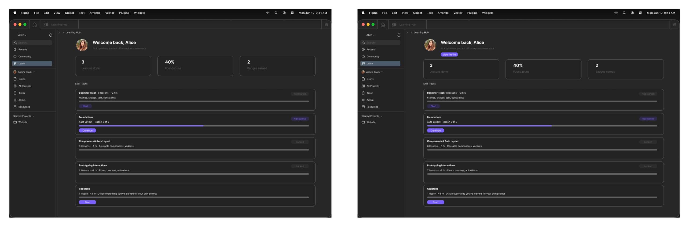
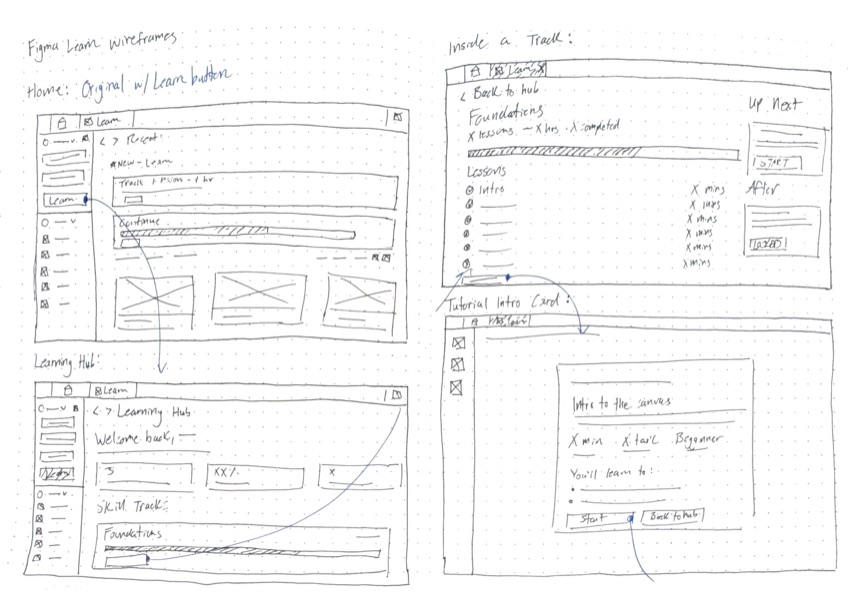
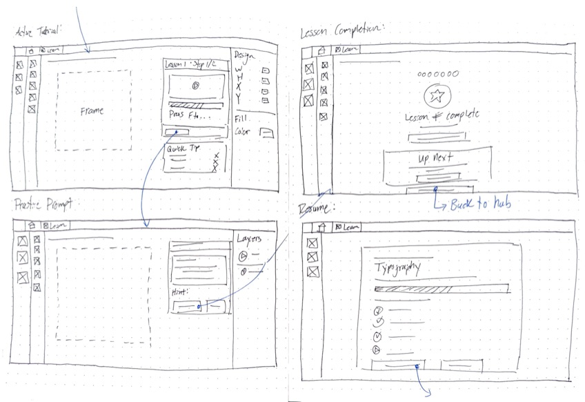
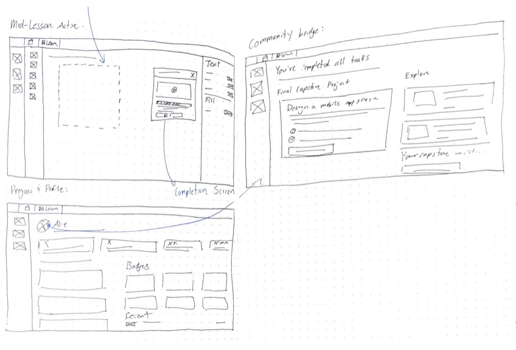

local
Figma Learn
An in-app onboarding and learning system, built inside the tool itself

01Context
Figma’s learning resources all live outside Figma.
For MEJO 581, I ran a UX competitive analysis across six sites (including Stripe, Axios, and Are.na) built around a thesis: user-centered design and product-centered design produce genuinely different outcomes, not just different processes. Figma Learn was the follow-through on that thesis.
Figma’s own learning resources like docs, YouTube tutorials, and community files all live outside the tool, forcing beginners onto YouTube, Reddit, and third-party documentation just to understand the basics.
02Problem
Beginners can’t find a starting point inside the tool.
“Knowing where to start... there are so many tools.”
“I don’t know what I can do on Figma.”
How might we help self-taught beginners learn Figma without ever leaving Figma?
03Research
The same gap, everywhere beginners learn.
I traced the gap through direct observation: App Team Carolina’s UI/UX Academy, Information Science and MEJO classrooms, Figma Community forums, r/figma, and r/learndesign all showed the same pattern. Self-taught learners couldn’t find a starting point inside the tool itself.
- Ran two in-depth interviews (Nina, a MEJO major exploring UX through App Team Carolina, and Aaron, an Information Science major who switched from pre-dental to UX) plus one AI-assisted composite interview, run with Claude, to surface patterns across a broader self-taught-learner archetype. Then built personas and a spectrum map across all three.
- Benchmarked against Duolingo (self-paced, gamified progression, but not contextual to a design tool), Codecademy (learn-by-doing, but a separate platform that still requires leaving Figma), and Figma’s own Community (templates and resources, but no structured path, and most users don’t know it exists or how to use it for learning).


Personas for Nina and Aaron, built from the two interviews.
04Solution
A learning path that feels native to Figma.
A skill-track architecture from the Beginner Track through Foundations, Components & Auto Layout, Prototyping Interactions, and a Capstone, with locked/unlocked progression.
The 13-screen prototype covers the full arc: a Learning Hub with skill tracks, step-by-step tutorials pairing video with live practice on the real canvas, lesson-completion screens with earned badges (Canvas Navigator, Frame Builder, Type Setter, Constraints Pro, Grid Wizard), a resume flow that picks users back up mid-lesson, a profile page tracking lessons done and time spent, and a capstone that bridges into the Figma Community.
Tested and fixed
I ran three usability testing sessions on the interactive prototype via UserTesting.com. Feedback on the concept was consistently positive (one tester called the prototype "very rare" among quality design tools), but it surfaced two concrete friction points.
Testers repeatedly lost their way trying to find their progress and badges, so I added a persistent "View Profile" button directly in the Learning Hub instead of relying on sidebar navigation alone.
Testers were also unsure whether they were meant to actively complete tasks or just click through the prototype, so I tightened the interaction wiring between the tutorial, practice, and completion screens so the path forward was never ambiguous.

Before and after: a persistent View Profile button in the Learning Hub.
Idea to prototype, in a third of a semester
The whole project took about a third of the Spring 2026 semester, with each week leading up to the final presentation.
- Step 1Competitive analysis and thesis.
- Step 2Interviews, personas, and benchmarks.
- Step 3High-fidelity screens and a clickable 13-screen prototype.
- Step 4Three usability tests, two fixes made.
- FinalFinal presentation.
Where Figma sits
- Research
- Figma, in Figma’s design language
- Figma prototype
- UserTesting.com
Here Figma is both the tool and the product. Every screen had to look and behave like it already belonged in Figma, so I designed inside Figma’s own visual language and component system rather than from a blank canvas.
Early sketches
Before the high-fidelity screens, I diverged on paper before converging on one system.



05Scenarios
Four moments in a beginner’s first weeks.
-
Opening Figma for the first time
Instead of leaving for YouTube, they see a Learning Hub with a Beginner Track.
Later tracks stay locked until they’re ready.
-
Learning a skill
Each lesson pairs a short video with live practice on the real canvas.
Finishing earns a badge, like Frame Builder.
-
Coming back mid-lesson
The resume flow picks them up where they left off.
Their profile shows lessons done and time spent, one tap away from the Hub.
-
Finishing the path
A capstone project ties the skills together.
It hands them off to the Figma Community.
06Learnings
Designing inside someone else’s design language.
Figma Learn is purely conceptual rather than shipped. The real constraint was designing entirely within Figma’s own visual language and component system. Every screen had to look and behave like it already belonged in the product.
I treated it less like a class assignment and more like a pitch: it shipped with full documentation and a LinkedIn post strategy aimed at Figma employees. This was a real test of skills rooted in what I love to do, teaching and mentoring others.
Actually shipping it would take partnership with Figma’s design and education teams, backend work to track real progress across sessions, and usability testing well beyond the three rounds I ran here.